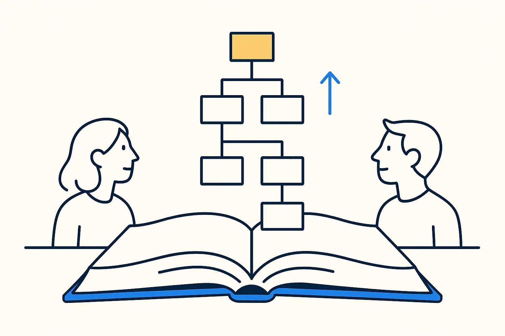
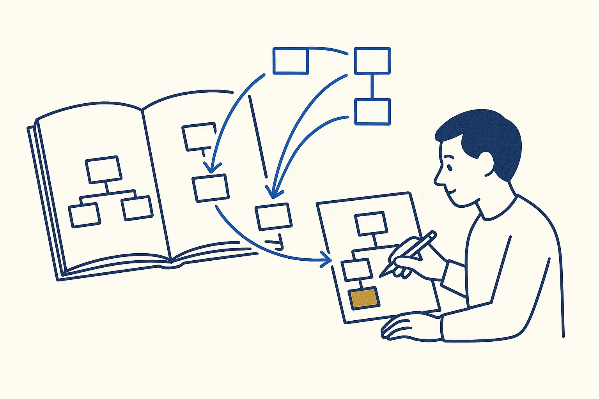
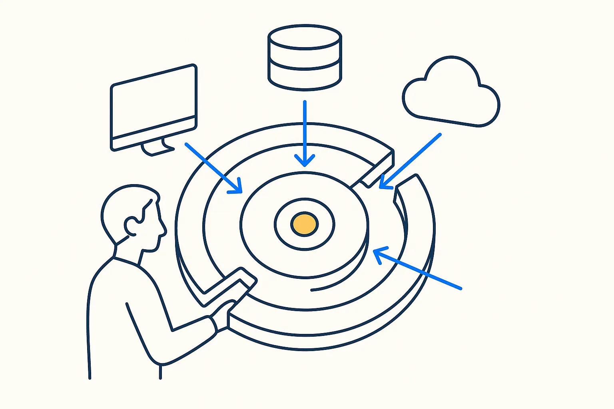
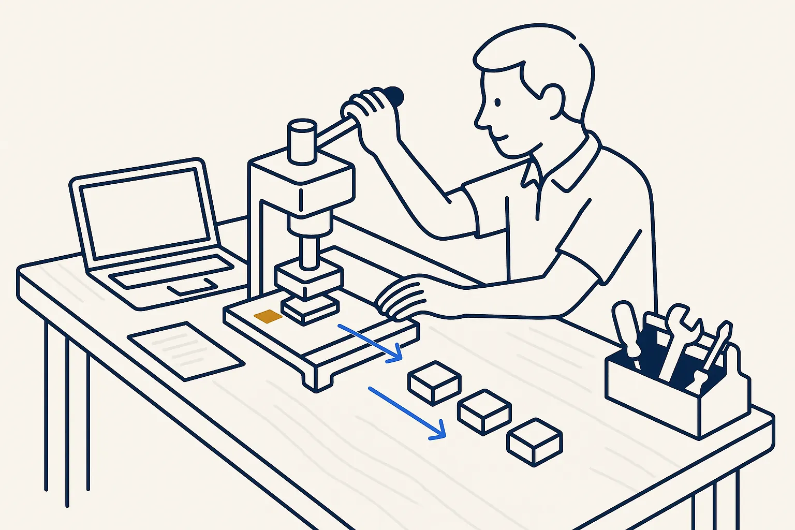
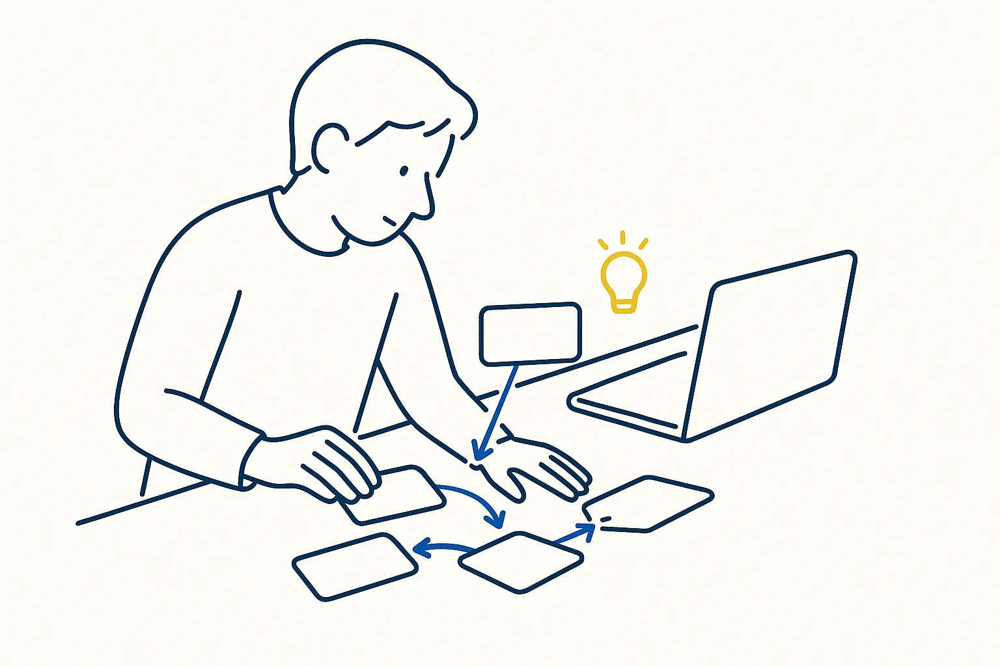

The Data Model Resource Book (Universal Data Models)
Proven patterns for parties, agreements, products and work efforts. The CRM replacement on this site uses its Work Effort pattern.
Len Silverston

What the book is about
Len Silverston's library of universal data models: patterns for people and organisations, products, orders, agreements, work efforts and accounting that apply to almost every company. Instead of designing a data model from a blank page, you start from one that has already been proven many times.
Ideas I took from it
- People and organisations are one concept with roles. A customer, a supplier and an employee are the same "party" in different roles, which removes a lot of duplicate data.
- Work efforts nest. A project contains tasks, tasks contain activities, and the same pattern covers all of them. My own CRM is built on it.
- Take the fraction you need. Nobody uses the whole book; you take the part that fits your use case.
I met Len Silverston in 2017, and his book still shapes how I model.
On a Build Day
You do not need to read it. If your use case needs a data model, we take the relevant pattern from it, so your small tool starts with a structure that will hold.
Links
Concepts behind it
- Proven Patterns — Proven shapes you reach for instead of inventing — a pattern captures a repeatable solution (Data Vault, dimensional, temporal) so you compose from known-good parts.
- Do Not Reinvent the Wheel — The new way of modeling stands on the shoulders of giants — distil the essentials from decades of data-modeling work and keep what works, rather than starting from scratch.
- Model the Process, Not Just the Model — Model not just the data model and the transformations, but the whole process — delivery, integration, migration, quality checking, the backroom — and how the system changes over time.
Used in these use cases

A data model in an afternoon, from a proven patternParties, products, orders, agreements, locations, accounts and events have been modelled well for decades. Start from those patterns, keep what you need, add your own rules, and generate the database from it. Replacing a CRM before the renewal dateInstead of switching to another CRM, I model the work itself — people, organisations and recursive activities — and grow my own cockpit towards a fixed exit date.in progress
Replacing a CRM before the renewal dateInstead of switching to another CRM, I model the work itself — people, organisations and recursive activities — and grow my own cockpit towards a fixed exit date.in progressRelated articles
- Sidecar Markdown — Giving a PDF the Thing It Can Never Have — Structure Beats Magic
- Context Engineering for One — Structure Beats Magic
The neighbourhood
How this connects
More in Software and data architecture

Clean ArchitectureRobert C. Martin · 2017Keep the rules of the business apart from the tools around them. That separation is what lets you swap the AI, the database or the screen later.Read more →
The Pragmatic Programmer (20th anniversary edition)David Thomas & Andrew Hunt · 2019Tracer bullets, small steps, don't repeat yourself. Written for programmers, and more relevant now that the AI is the one typing.Read more →
Semantic Software DesignEben Hewitt · 2019Design starts with meaning: name the concepts of the business before choosing any technology.Read more →